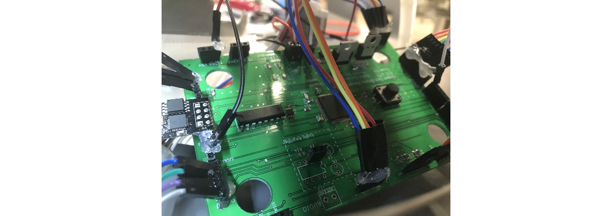
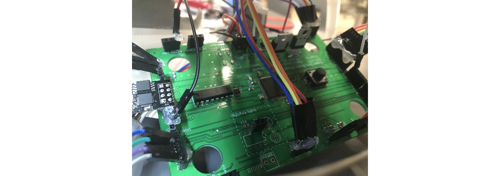
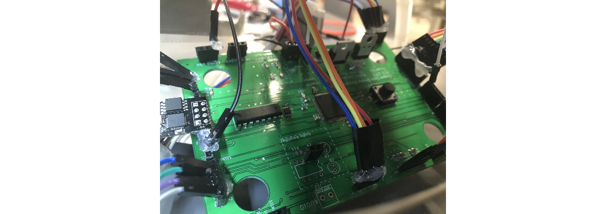

The following project was done as part of the senior design course, ECE 477, offered at Purdue University, West Lafayette.
This project is a drone that receives drink requests form users through an app interface and delivers the selected beverage to the user through
GPS naviation. When desiging this system, our intended use case would be out in a golf course. The idea would be for users playing golf to send a request
using their phones when they got thirsty. A bartender at a clubhouse would receive the request, load the beverage, and send the drone for delivery.
Hardware
The PCB was designed using Eagle and was used to interface with the drone's motor controls as well as other peripherals such as WiFi, GPS, and LCD display.
The Microcontroller chosen was the STM32F476VGT6 with an ARM Cortex M4 processor. We wanted to ensure that we had enough PWM signals to
drive the drone motors as well as floating point support to use target GPS coordinates in order to create efficient path finding algorithms
The ESP8266 WiFi chip was used to receive the drink requested and target GPS coordinates from the app, as well as acknowledge the request and
send responses back to the users.
The speaker circuit was included to alert the bartender when a drink request came in. The LCD would then display the order. The bartender would put
the drink near the claws and attach it with a parachute.
The push button was used to latch the beverage to the claws. The latching process involved using PWM to toggle two servos in opposite directions. The push button
was then used again to initiate the launch sequence of the drone to deliver the beverage.
The Adafruit Ultimate GPS Breakout board was used to send the drone's current GPS coordinates to the microcontroller. The GPS module would continuously do this
while the drone was in flight to make sure it was going in the right direction to the target location

Software
Prior to PCB design, prototyping was done using the STM32F4 discovery board. To ease in the development of the peripheral configurations, we took advantage of
STMicroelectronics' Hardware Abstraction Library (HAL).
For WiFi development, we used a USB-to-FTDI converter to program the ESP8266 using the Arduino IDE. The code programmed into the ESP module was set to connect
to a specific network and listen for any events. When the app sends a command, the ESP parses the package and sends via UART the drink and GPS coordinates to the
STM32.
The flight controller used for autonomous control was the Naza M Lite Flight Controller. We used PWM signals to control the X and Y motor drivers and fly
the drone. Since this was a course project and we were limited in time, we chose to implement a path finding algorithm that searched X before Y. This meant we
kept driving the X motor until the currrent GPS X coordinate matched the target X coordinate. Once that matched, we repeated the same with Y.
When the drone reaches the target location, it hovers to just 10 feet above the ground, and opens the claws to let the drink fall with the parachute. The drone then
goes back to base location.
Demo
As part of the senior design course requirement, we demoed our project at the Purdue ECE Spark Challenge.
While there isn't video footage from the demo showing the drone go through the full process, the following video below shows segments of each part of the process:
Acknowledgements
This work was done with the help of my fellow teammates: Justin Seeke, Thomas Bosler, and Imad Sheriff


 
